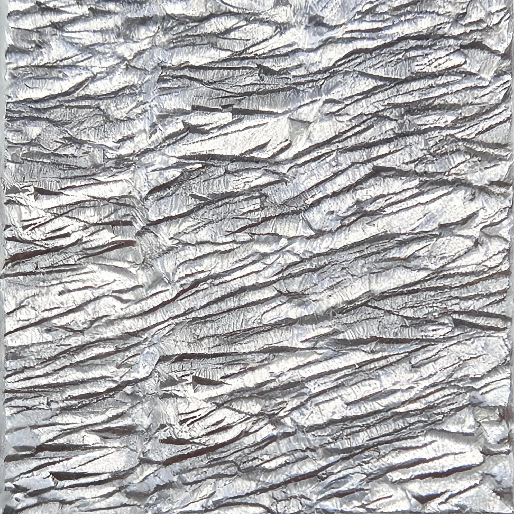
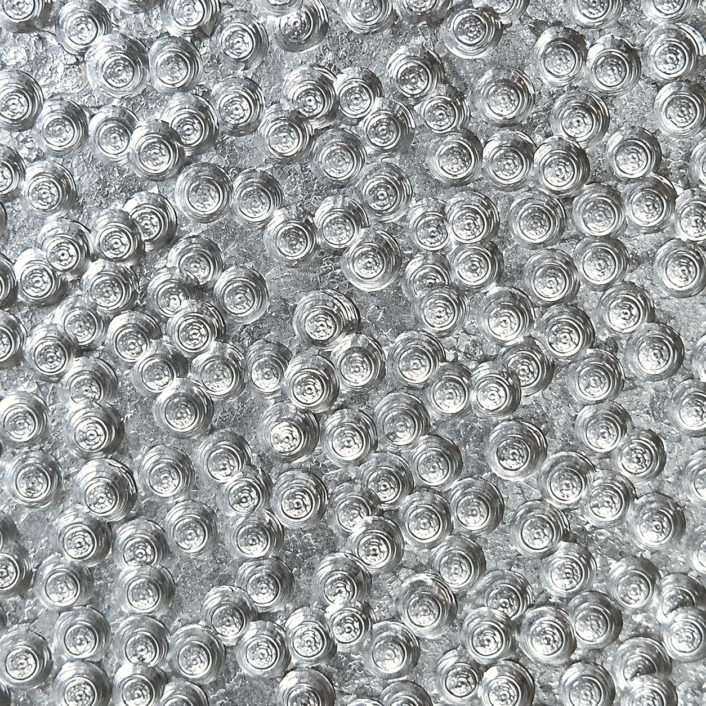
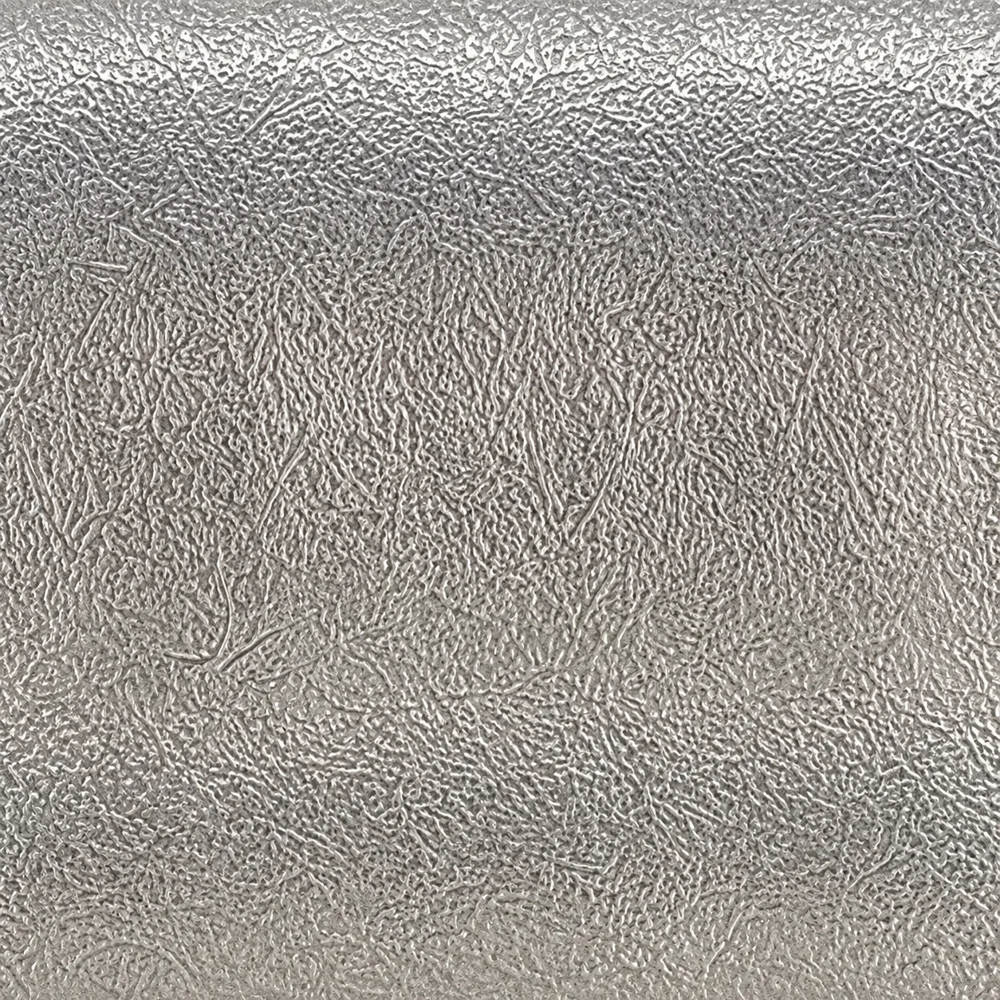
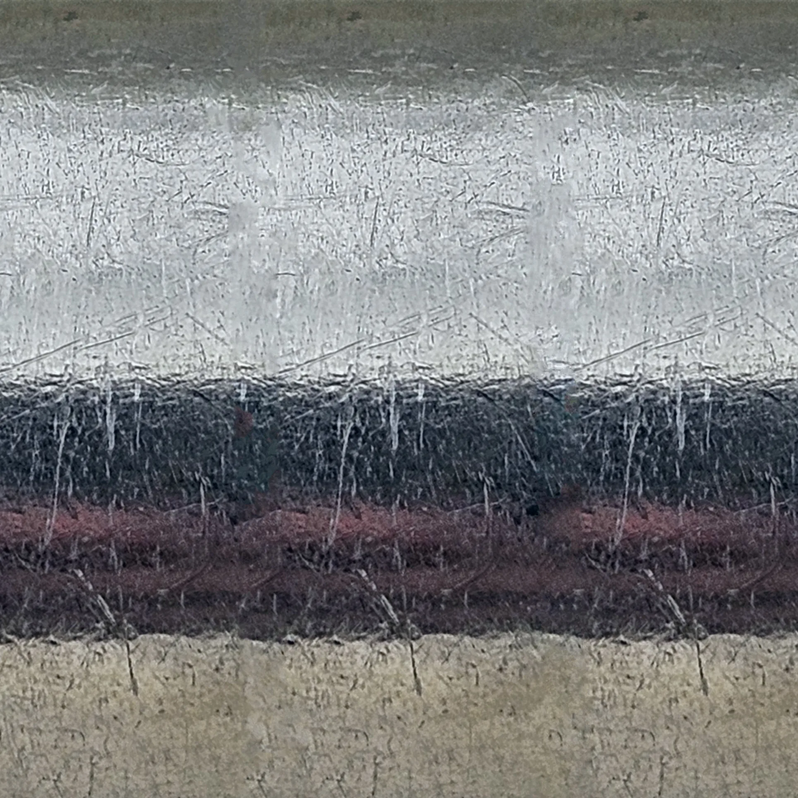
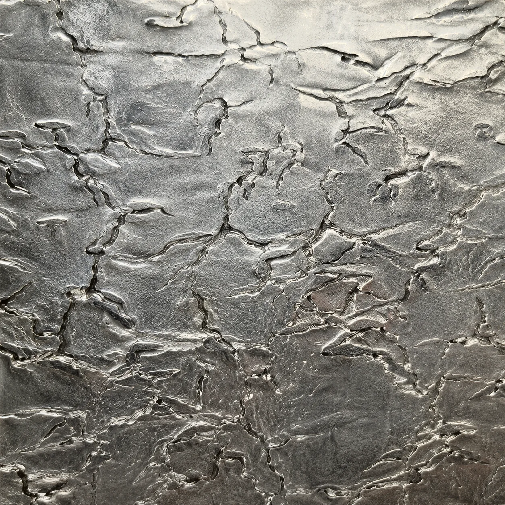

CircuitCurios
Oberfläche als Identität.
Handgearbeiteter Schmuck · Aluminium · Einzelstücke
Die Oberflächen
Jede Struktur folgt einem Entstehungsprinzip. Öffne eine Oberfläche, um ihre Identität zu sehen.






Über CircuitCurios
CircuitCurios ist ein unabhängiges Handmade-Label aus Remscheid. Im Mittelpunkt stehen Aluminium, Oberfläche und Einzelstücke.
Struktur, kleine Unterschiede und Werkzeugspuren gehören zum Entwurf. Die Oberfläche ist kein Finish. Sie ist der Entwurf.
Kontakt & Shop
Aktuelle verfügbare Arbeiten findest du im CircuitCurios Etsy-Shop.
Dort kannst du auch Kontakt aufnehmen.